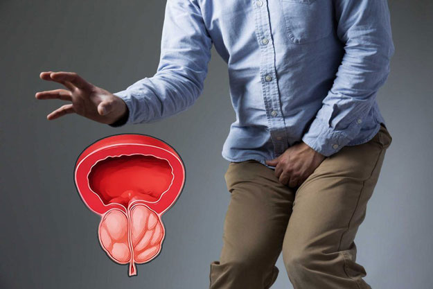
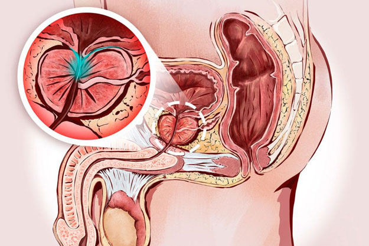
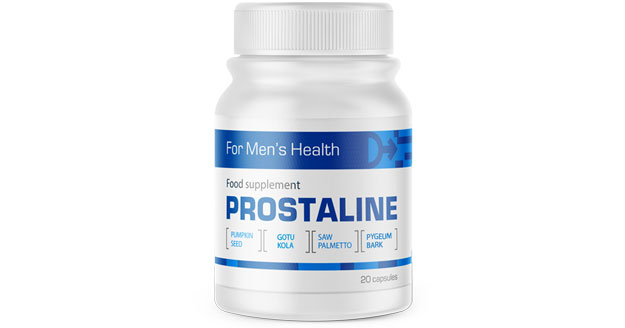
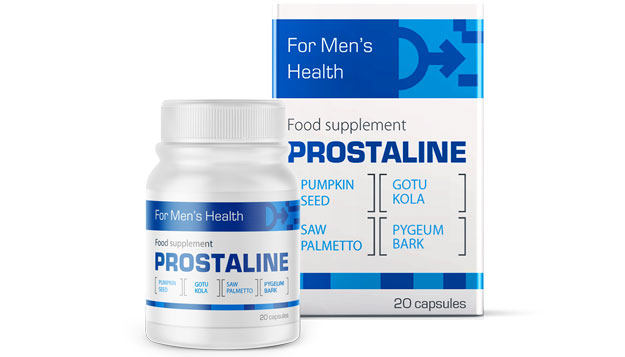

Как вылечить простатит?
Ежедневно в нашу редакцию приходит огромное количество писем, но одно из них привлекло наше особое внимание. Считаем, что оно будет полезно мужской половине читателей нашего журнала.

Хочу поделиться своей историей и, возможно, помочь другим мужчинам, страдающим от простатита, снова стать здоровыми. По понятным причинам, желаю остаться инкогнито.
Во-первых, что такое простатит? Простыми словами, это воспаление предстательной железы. Той самой, которая вырабатывает секрет, позволяющий вашим сперматозоидам путешествовать к своей цели и не помереть на ранних этапах своей и без того короткой жизни. Также именно простата перекрывает мочевой канал во время полового акта, не позволяя попасть сперме в мочевой пузырь и наоборот. Причин простатита много, но основными являются сидячий образ жизни и алкоголь.
Моя история началась задолго до того, как я узнал, что такое простатит. Всегда казалось, что это слово из списка заболеваний пенсионеров, и ко мне никакого отношения иметь не может. Примерно лет с 15 периодически у меня начали появляться боли. Боль колющая, очень странного характера. В то время я даже объяснить не смог бы, в каком месте. Происходило это очень редко, и значения я этому не придавал. Мало ли из-за чего это может быть. редко и перетерпеть 5-10 минут труда не составляло.
Прошло 10 лет. За это время меня почти ничего не беспокоило. Ну проявлялась такая боль раз в 2-3 месяца, иногда реже. И почему-то у меня засело в голове, что, наверно, так у всех. Просто такая вещь, о которой не говорят. Самое болезненное было, когда проявлялось после секса. Не самое удобное время, чтобы скручиваться от боли в холодном поту.

И вот, когда мне было 25, у меня появилась давящая боль в паху. Через неделю усилилось так, что начала неметь нога на внутренней стороне до колена. Первое, что пришло мне в голову – грыжа. К тому же, я перенес 4 операции на грыжу, три из которых были паховые. Ощущения были очень схожие, и я начал морально готовиться к операции. На основании такого предположения, записался к хирургу, который пощупал пах, опроверг мои догадки и отправил к урологу.
Осмотр у уролога был мучительным. Врач поставил меня в не самую приятную позу и засунул палец (а по ощущениям всю руку) в неприкосновенное для любого мужчины место. И вот, что я вам скажу: если вам говорят расслабиться в такой ситуации, можете даже не пытаться. В таком положении я провел около минуты. Конечно, сложно сосредоточиться в такой ситуации, но мне еще приходилось отвечать, в какой момент боль усиливается. И усиливалась она в момент нажатия на простату.
Закончив диагностические процедуры, доктор предложил проследовать в кабинет, попутно отпуская какие-то шутки про переохлаждение. Но стоило присесть к нему за стол, как добрый дяденька превратился в прокурора. Я выслушал самую жесткую и унизительную лекцию о том, что я страдаю заболеванием 45-50-летних. Наступила пауза. Молчание прервал уже я с вопросом "ЧТО ДЕЛАТЬ?". Уролог сбавил пыл и начал неспешно объяснять, с чем я имею дело. Выписал свечи, таблетки и анализы.
Лечение помогло. Кстати, по совету того же врача, стал заниматься спортом (мол, предотвращает патологический застой в простате). И как-то после бассейна я почувствовал знакомое жжение. Отправился уже к другому врачу. Опять та же история с анализами и те же рекомендации. Помогло на время, но проблема снова вернулась.
Я так понял, это у урологов нормальная практика – не лечить болезнь, а временно снимать симптомы. Поэтому решил действовать самостоятельно. Обшарил весь интернет, перечитал тонну отзывов о разных врачах. На одном из форумов наткнулся на ветку о профессоре, который излечивает от простатита раз и навсегда. Правда, его консультация стоит баснословных денег.
Но куда деваться? Записался, ждал своей очереди полтора месяца. К профессору пришел уже со стопкой готовых анализов. Почти не глядя на них, он достал из ящика пачку таблеток, вручил ее мне и отправил на ресепшн оплачивать прием.
Препарат назывался «PROSTALINE». Я пропил весь курс, как положено. Эффект впечатлил: ушли не только боли и общий дискомфорт. Потенция повысилась в разы, эрекция стала более качественной и долгой.

Самое приятное: прошло уже полтора года, как я завершил курс лечения с «PROSTALINE», и с тех пор не произошло ни одного рецидива.
Недавно решил пропить «PROSTALINE» для профилактики простатита и для повышения потенции. Полез в интернет, чтобы выяснить – подходит ли этот препарат и для таких целей. Как выяснилось, да, подходит.
И открыл для себя еще один интересный момент: стоит «PROSTALINE», на самом деле, в несколько раз меньше, чем я заплатил за него в клинике профессора. Препарат можно заказать напрямую у производителя без каких-либо наценок. А профессор оказался тем еще мошенником. Так что хочу поделиться ссылкой, где можно заказать «PROSTALINE» по цене производителя:

Заказать PROSTALINE на сайте производителя